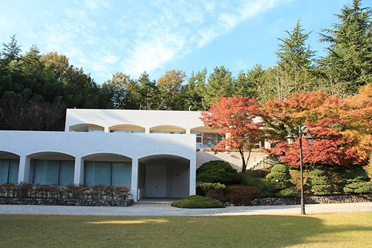
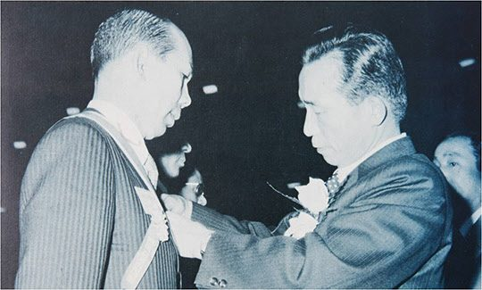
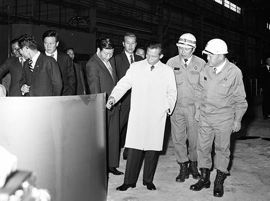

보도일 2015-04-29출처 조선일보 프리미엄조선 연재
1979년 1월 31일 저녁, 박정희가 포항으로 내려왔다. 명목은 다음날로 잡힌 ‘포철 4기(850만 톤 체제) 종합착공식 참석’이었다. 그러나 진짜 목적은 공장 순시가 아니었다. 오늘 밤에 막걸리 한잔 하자. 이것이었다. 다른 뜻은 없었다. 막걸리 한잔, 오직 그뿐이었다. 다만, 막걸리는 포항 막걸리가 아니었다. 대통령이 고향 막걸리를 마시고 싶다고 했다. 박태준은 구미(선산)로 사람을 보내서 막걸리를 미리 준비해 둔다.
박정희는 저 1960년 부산 시절처럼 허심탄회하게 아무런 부담없이 박태준과 술잔을 나누려는 마음이었다. 마냥 편안한 사람과 마냥 편안한 대작을 바라는 박정희의 심경을 박태준은 손바닥처럼 읽을 수 있었다. 무엇보다도 박태준은 대통령이 지치고 외로워 보였다. 사모님만 살아 계셨더라도…. 육영수, 그 이름과 그 모습이 그의 가슴을 쓰라리게 했다.

포항시 효자동 포철주택단지 내 백록대 2층에 마련된 술자리. 박정희와 박태준은 정말 오랜만에, 거의 20년 만에 계급장을 떼고 인간적인 맨가슴을 열어놓고 있었다.
“이렇게 편하게 모셔본 것이 정말 까마득한 옛날 일인 것 같습니다.”
“나도 임자하고 이런 자리를 갖고 싶어서 훌쩍 찾아온 거야.”
“배려 덕분에 휴가는 잘 다녀왔습니다.”
“겨우 일본에서 일주일을 보냈다며? 못난 사람….”
“어쩌겠습니까? 우리 직원들에게 한 달 휴가를 줄 수 없으니 그 정도도 과분한 것이지요.”
“그건 그래. 하여간 임자는 못 말려.”
두 웃음이 손뼉처럼 터졌다. 데면데면한 구석이라곤 손톱만큼도 찾아볼 수 없는 분위기 속에서 두 사람은 헤아리지 않는 술잔을 주고받았다.
박태준이 박정희에게 받았던 ‘과음에 대한 처벌’을 꺼냈다.
“이 사람아, 내가 과음 가지고 나무랄 사람이야? 그거 무슨 소리야?”
“그때 각하의 주치의를 포항에 두고 가시지 않았습니까?”
“아, 그래!”
두 사람은 껄껄거리며 벌써 6년 전에 있었던 짧은 소동을 술잔에 담았다.

1972년 11월이었나, 박정희가 포항제철을 방문했을 때였다. 박태준은 브리핑을 준비했는데 지독한 숙취에 시달리고 있었다. 아침에 약도 먹었으나 도무지 속이 가라앉을 줄 몰랐다. 숙취의 멀미는 조금도 사정을 봐주지 않았다. 대통령이 앞에 있건 말건 위장 밖으로 밀어낼 것은 기어코 밀어내려고 했다. 박태준은 꾹 참으며 보고를 시작했다. 그것이 착각이었다. 구토는 터럭만큼도 사정을 봐주지 않았다. “죄송합니다.”
이 말을 내놓기 바쁘게 그는 후다닥 뛰어나갔다. 과음 후유증에 시달리는 모습을 하필이면 대통령에게 적나라하게 들키는 포철 사장…. 하지만 박정희는 아무렇지도 않다는 듯이, 좀 고소하다는 듯이 그저 웃고만 있었다. 아무렇게도 여기지 않는 것은 애주가의 덕망이라 치더라도, 좀 고소해하는 것은 자신과의 모든 술자리에서 언제나 멀쩡했던 술꾼이 드디어 한 번 무너지는 모습을 재밌게 지켜보는 즐거움 같은 것이었다. 박태준이 구토를 마치고 얼굴을 수습하여 자리로 돌아오자 박정희는 인자한 형님이나 스승처럼 말했다.
“고생이 많아서 그래.”
그런 다음에는 주치의를 쳐다보며 지시를 내렸다.
“저 친구 다 낫게 해주고 올라오시오.”
그래서 대통령 주치의가 사흘이나 포항에 머물렀다. 박태준은 ‘과분한 처벌’을 받은 셈이었고….
박태준이 박정희의 잔을 채웠다.
“각하의 주치의가 사흘이나 포항에 남았으니 저로서야 그보다 더 심한 처벌이 어디 있었겠습니까?”
“어, 그렇게 된 거네.”
두 사람은 다시 홍소를 터뜨렸다.

대화가 철강 쪽으로 옮겨졌다. 박태준이 보고하듯 또박또박 말했다.
“내일 착공하는 4기를 마치면 850만 톤 규모로 확장됩니다. 포항에서 1000만 톤은 부지가 협소해서 한 번 더 확장을 해도 목표치에는 조금 미달하게 되겠지만, 제2제철소에서 1200만 톤을 해버리면 대망의 철강 2000만 톤 시대를 넘어설 것입니다. 자신감이야 넘치지만 아직 갈 길이 멀어 보입니다.”
두세 차례 무겁게 고개를 끄덕인 박정희가 불현듯 목소리를 깔았다.
“태준이.”
‘임자’도 아니고 ‘자네’도 아니고 참으로 오랜만에 박정희의 음성으로 들어보는 이름. 박태준은 좀 멍멍했다.
“네, 각하.”
“내가 말했나? 우리가 가야 할 길이 혁명 때 처음 생각했던 것보다 험하고 멀다고?”
“네. 포철에 오셔서 독백처럼 그런 말씀을 하셨지요.”
“언제였나. 고로 앞에서 우리가 약속했지. 고로의 불꽃이 국가재건, 민족중흥의 불꽃이니 우리는 그걸 짊어지고 가야 한다고.”
“1억 달러가 없어서 그렇게도 속을 태웠던 1고로 앞이었습니다. 그때 약속드린 대로 저는 철강 2000만 톤 시대를 열어젖히는 그날까지 어떠한 일이 있어도 고로의 불꽃을 짊어지고 가겠습니다.”
“태준이 약속은 신용장인 거 알아. 그렇게 해야지.”
두 사람은 똑같이 눈높이로 막걸리 잔을 들었다. 1979년 1월의 마지막 밤, 칠흑의 하늘엔 들꽃 같은 별들이 총총히 피어 있고, 총총한 별만큼이나 무수한 이야기들이 두 사람의 술잔을 기다리고 있었다.